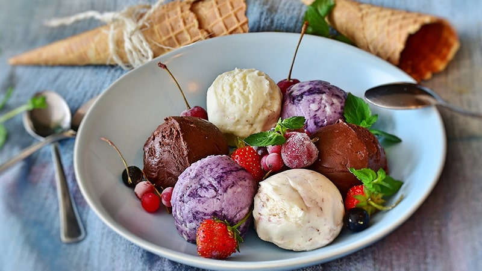

Resep Es krim 3 Rasa

Bahan-Bahan:
- 200 gr wippy cream bubuk
- 500 ml susu cair
- 2 sachet susu kental manis (manisnya sesuai selera ya)
- 100 ml air putih (matang)
Perasa :
- 1 sdt pasta vanila
- 10 keping biskuit oreo (hancurkan kasar)
- 1 sdt pasta strawberry
- 1 sdm coklat bubuk
- Secukupnya choco chip
Langkah-Langkah:
- Langkah 1 :
- Dinginkan terlebih dahulu susu cairnya sampe setengah beku.
- Langkah 2 :
- Tuang jadi satu susu cair dingin, wippy cream bubuk dan skm lalu mixer sambil dimasukan sedikit demi sedikit air putihnya.
- Langkah 3 :
- Mixer sampai berjejak dan mengembang.
- Langkah 4 :
- Bagi ice cream menjadi 3 bagian kemudian masukan perisanya masing2 lalu mixer sebentar supaya tercampur rata
- Langkah 5 :
- Pada es krim vanila beri topping oreo dan pada es krim coklat beri topping choco chip
- Langkah 6 :
- Masukan kedalam wadah dan masukan ke freezer sampai beku
- Langkah 7 :
- Es krim siap dinikmati...
nb: untuk pemilihan rasa opsional ya😊